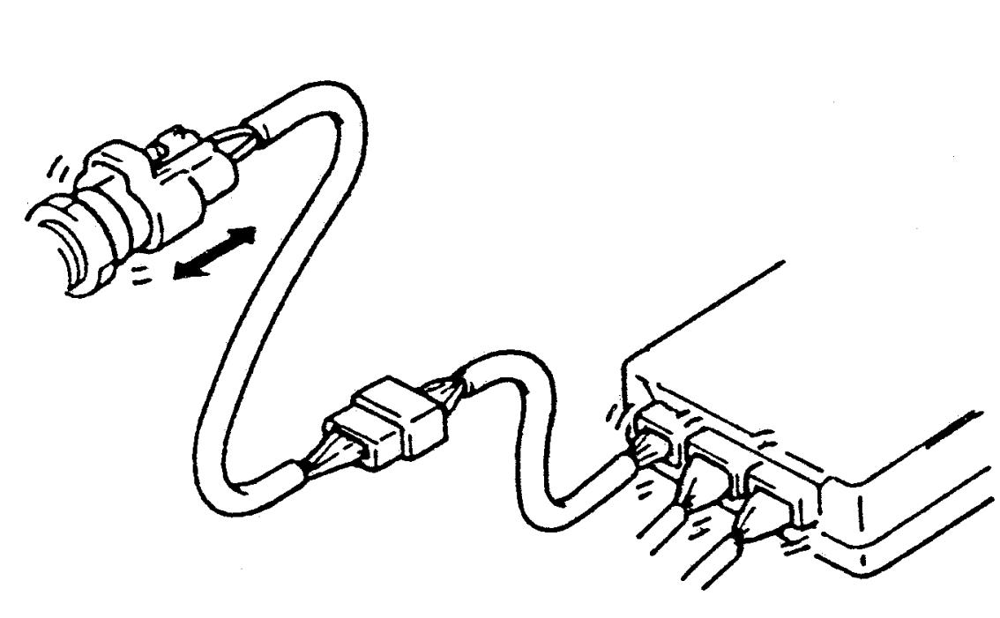
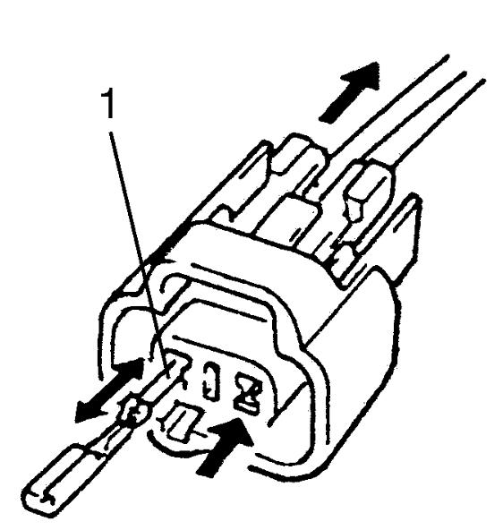
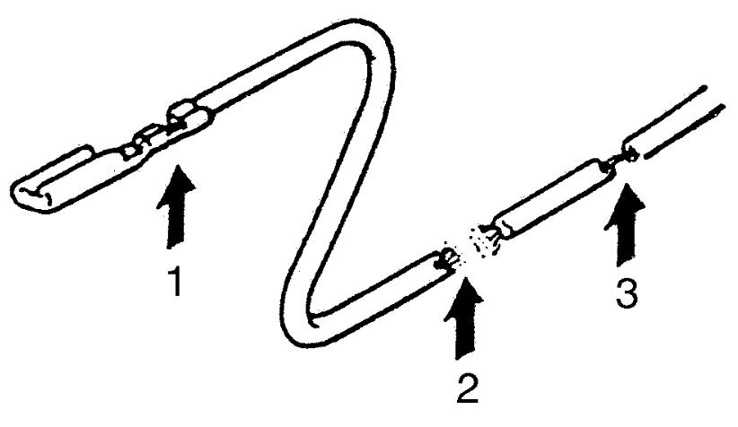
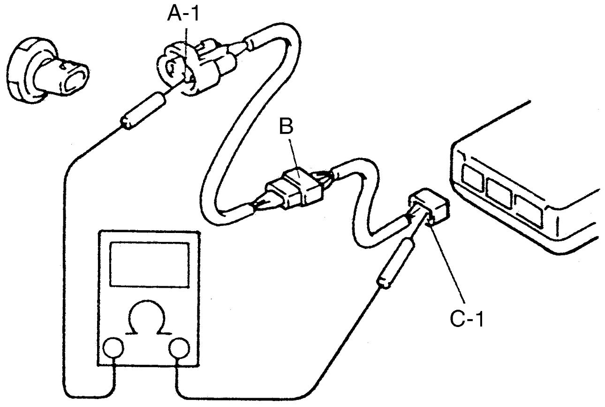
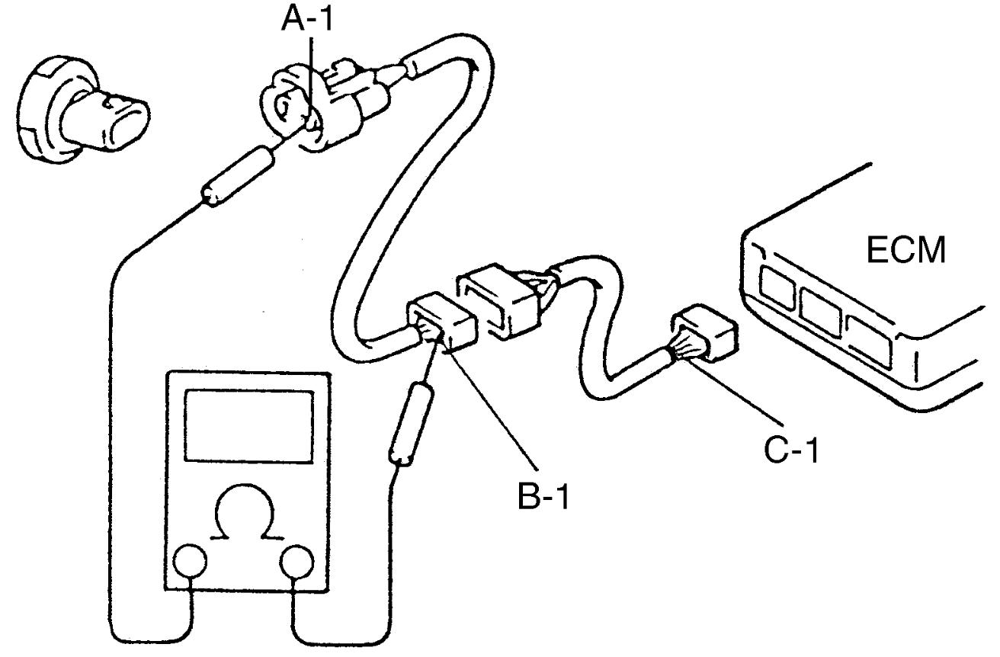
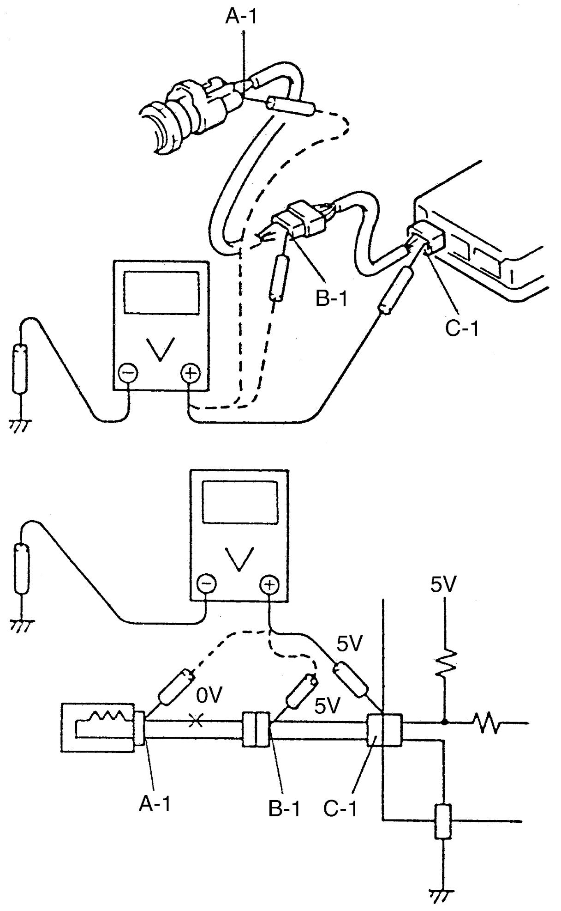
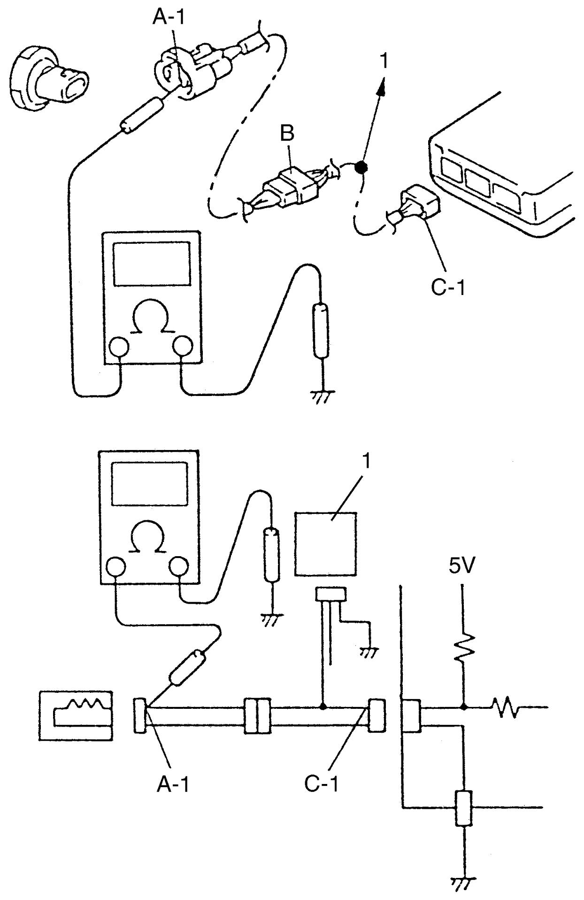
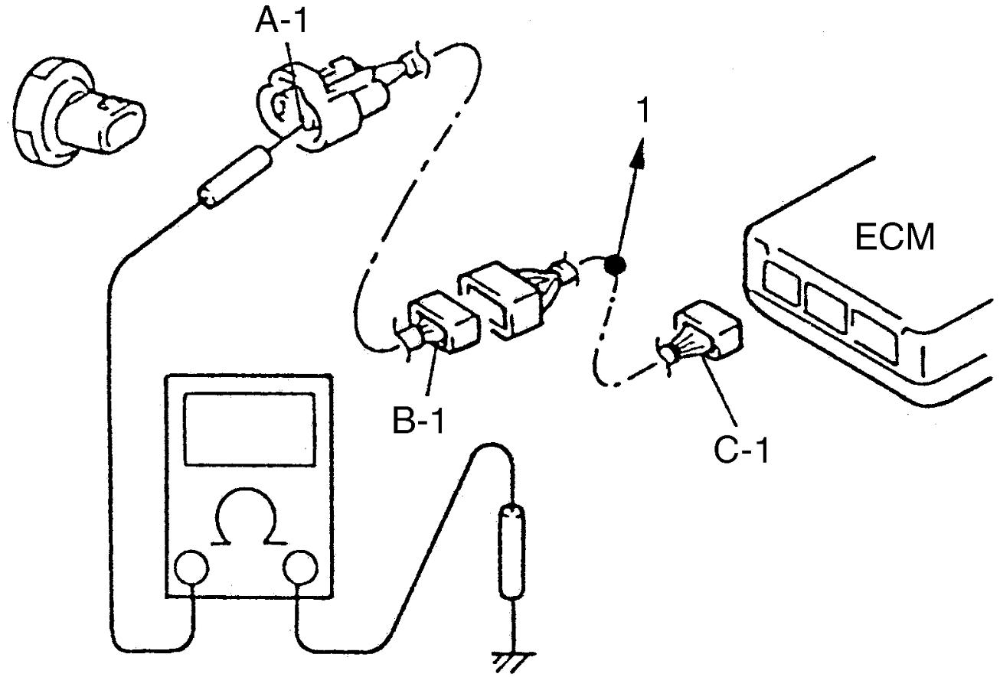

00
| Electrical Circuit Inspection Procedure |
While there are various electrical circuit inspection methods, the following describes the general methods using an ohmmeter and a voltmeter to check open and short circuits.
Open Circuit Check
Possible causes for the open circuit are as listed below. As defects in connectors or terminals are most often the causes, they need to be checked particularly and carefully.
•Loose connection of connector
•Poor contact of terminal (caused by dirt, corrosion or rust on it, poor contact tension, entry of foreign object, etc.)
•Open wire harness
•Poor contact of terminal (caused by dirt, corrosion or rust on it, poor contact tension, entry of foreign object, etc.)
•Open wire harness
When checking circuits including an electronic control unit such as ECM, TCM, ESP® control module, etc., it is important to carefully perform check, starting with items which are easiest to check.
1)Disconnect negative (–) cable at battery.
2)Check connectors at both ends of the circuit being checked for loose connection. Also check lock condition of connectors if equipped with connector locks.


 "Expand image")
3)Using a male terminal for test use, check terminals on both ends of the circuit being checked for contact tension of female terminals. Check each terminal visually for cause of poor contact (dirt, corrosion, rust, entry of foreign object, etc.). At the same time, check that each terminal is held and locked in connector fully.

 "Expand image")
| 1. | Check contact tension by inserting and removing just once. |
4)Perform continuity test or voltage check using the following procedure, to check the wire harness for open circuit and poor connection at its terminals.

 "Expand image")
| 1. | Looseness of crimping | 3. | Thin wire (single strand of wire) |
| 2. | Open |
Continuity Test
1)Measure resistance between connector terminals at both ends of the circuit under test (between “A-1” and “C-1” in the figure). If no continuity is indicated (infinity or over limit), it means that the circuit is open between terminals “A-1” and “C-1”.

 "Expand image")
2)Disconnect the connector included in the circuit (connector-B in the figure) and measure resistance between terminals “A-1” and “B-1”.
If no continuity is indicated, it means that the circuit is open between terminals “A-1” and “B-1”. If continuity is indicated, there is an open circuit between terminals “B-1” and “C-1” or connector-B is defective.
If no continuity is indicated, it means that the circuit is open between terminals “A-1” and “B-1”. If continuity is indicated, there is an open circuit between terminals “B-1” and “C-1” or connector-B is defective.

 "Expand image")
Voltage Check
If the circuit being checked is under voltage, voltage check can be used to check the circuit.
1)With all connectors connected and voltage applied to the circuit being checked, measure voltage between each terminal and ground.
a)If measurements are taken as shown in figure and results are as listed below, it means that the circuit is open between terminals “B-1” and “A-1”.
Voltage between
“C-1” and ground: Approx. 5 V
“B-1” and ground: Approx. 5 V
“A-1” and ground: 0 V
b)If measurements are as listed below, it means that there is an abnormally high resistance causing the indicated voltage drop in the circuit between terminals “A-1” and “B-1”.
Voltage between
“C-1” and ground: Approx. 5 V
“B-1” and ground: Approx. 5 V
“A-1” and ground: Approx. 3 V

 "Expand image")
Short Circuit Check (Wire Harness to Ground)
1)Disconnect negative (–) cable at battery.
2)Disconnect connectors at both ends of the circuit to be checked.
NOTE:
If the circuit to be checked is connected to other parts (1), disconnect all connections to these parts.
This is essential to having correct check results.
3)Measure resistance between the terminal at one end of the circuit (“A-1” terminal in the figure) and ground. If continuity is indicated, it means that the circuit is shorted to ground between terminals “A-1” and “C-1”.

 "Expand image")
4)Disconnect the connector included in circuit (connector-B) and measure resistance between “A-1” and ground. If continuity is indicated, the circuit is shorted to ground between terminals “A-1” and “B-1”.

 "Expand image")
| 1. | To other parts |